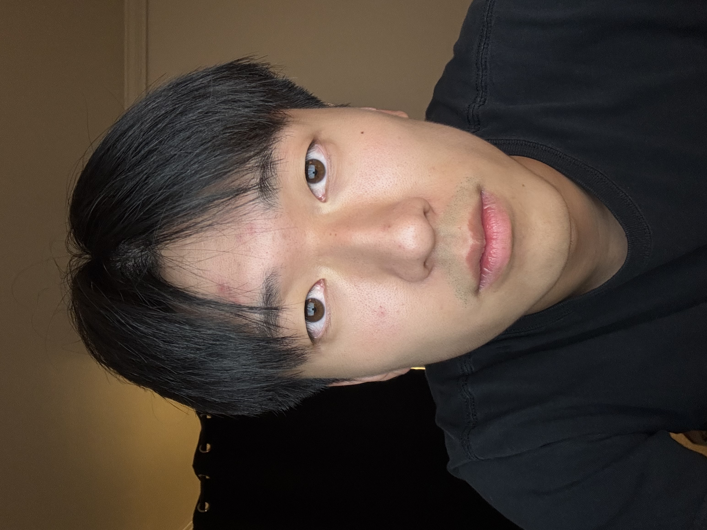
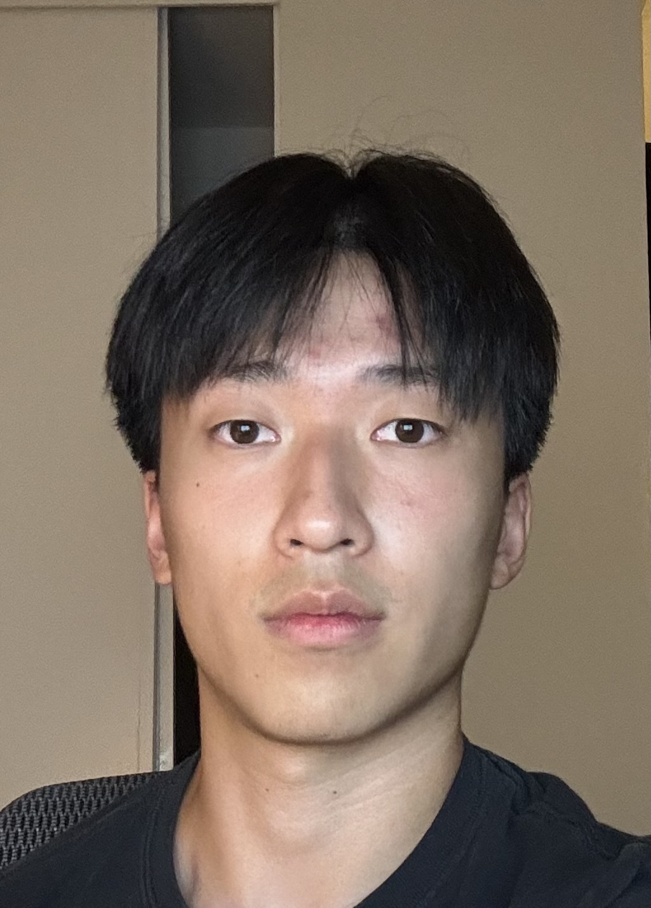
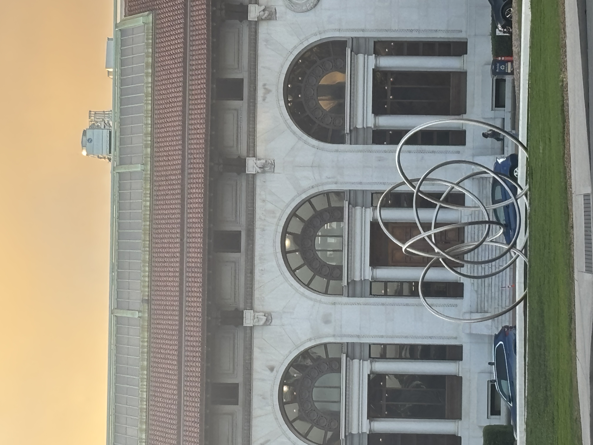
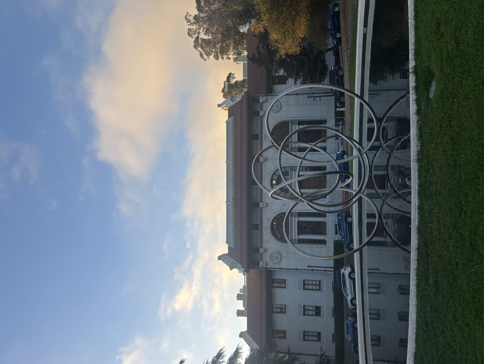
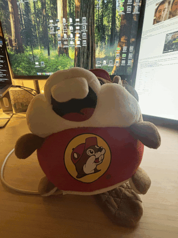

Part 1: Selfie - The Wrong Way vs. The Right Way


The left image is taken too close to my face, causing distortion and an uncomfortable perspective. The right image is taken at a greater distance, which looks more natural and what you would expect to see in real life.
Part 2: Architectural Perspective Compression


The left image is taken from far away and zoomed in, resulting in a compressed perspective where the Hearst Memorial Mining Building appears closer to the fountain, while the right image is taken from a closer distance with a wide-angle lens, making the building appear farther away from the fountain.
Part 3: The Dolly Zoom
